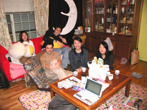

2004年12月24日、『ゲストハウスに住もう！ TOKYO非定住生活』（晶文社）という本を出版します（きっとあなたがこれを読まれる頃には書店にありますし、このWEBからも買えますよ）。 |
|  |
ゲストハウス、国際交流協会・新中野寮でくつろぐ住人のみなさん |
保証人不要なので、現在働いてない「ニート」でも、身寄りのない人でも、専業主婦でも入居OKですし、「実家に自分の部屋がない」「家の外に自分の聖域を持ちたい」「SOHOオフィスとして試しに借りてみたい」という人にはセカンドハウスとして安く利用できるのですから、マンスリーマンションのような高い部屋に引っ越すよりゼンゼン楽なんです。 |
| 今一生 con isshow 1965年、群馬県生まれ。フリーライター＆エディター、作詞家。97年、『日本一醜い親への手紙』3部作（メディアワークス）をCreate Media名義で企画・編集し、99年に『完全家出マニュアル』（同）を発表し、そこで造語した「プチ家出」が流行。新聞・テレビ・雑誌などにコメントする一方、大学・自治体・予備校など幅広い分野で講演活動も行っている。2003年から1年間、中日新聞日曜版でネットに関するコラム『ネット万華鏡』を連載したほか、全国の生徒指導の担当教師が読む専門誌『月刊 生徒指導』や、校長や教育委員会関係者が読む専門誌『青少年』でも連載。 著書に、宮台真司・田口ランディ・石川結貴の各氏と対談した『家族新生』（ワニブックス）、『「出会い系」時代の恋愛社会学』（ベスト新書）、『生きちゃってるし、死なないし/リストカット＆オーバードーズ依存症』（晶文社）、対談集『恋愛以前』（原書房）、『大人の知らない子どもたち 〜ネット、ケータイ文化が子どもを変えた』（学事出版）など。最新刊は、『ゲストハウスに住もう！/TOKYO非定住生活』（晶文社）。編著に、『子どもを愛せない親への手紙』（角川文庫）、 『「酒鬼薔薇聖斗」への手紙/生きていく人として』（宝島社）など。《WEB》www.createmedia.co.jp |